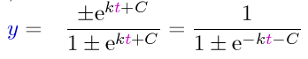

燃料を噴射して飛ぶロケットの噴射した燃料の量と到達速度の関係は微分方程式から求めることができる。
もし、我々が微分方程式というものを知らずにいいかげんな考え方をすると、どう考えるかを示すのが次のアニメーションである。
噴射した量は、ロケット本体の何倍か？を、↓のスライダで決定する。
右のボタンを押すと噴射が行われる→ 右のボタンを押すと最初に戻る→
上の「大間違い」は何が間違いなのかというと、ロケットの質量も速度も連続的に少しずつ変化していく量なのに、まるで一気に変わったかのように考えてしまったことである。
噴射した量は、ロケット本体の何倍か？を、↓のスライダで決定する。
右のボタンを押すと噴射が行われる→ 右のボタンを押すと最初に戻る→
二つの軍隊が戦争をしている。それぞれの兵力をA,Bとする。時間が経つと、AはBに比例して減り、BはAに比例して減るから、
dA=-α B dt, dB=-α Adt
という式が成立する。これはいわば「連立微分方程式」になっているのだが、(第1式)×A-(第2式)× Bという計算をすると、
AdA - BdB=-α ABdt +α ABdt
d (A2-B2)=0
A2 -B2 = 一定
という式が導かれる。これは「兵力自乗の法則」（またはランチェスターの第2法則）として知られる。たとえばB=B0,A=2B0（Aの方が２倍の兵力を持っていた）場合、この式の右辺は3(B0)2となるから、A=(√3)B0になったところでB=0となる。Bの兵力が文字通り全滅した時、Aは（2B0→(√3)B0と変化したので）最初の(√3)/2倍が残っている。
「ある流行（服でも靴でもいい）がどのように時間的に流行していくかを方程式で示す」を微分方程式として考えてみよう。全人口のy倍がすでにその流行に乗っている（つまり服を着るなり靴を履くなりしている）としよう。変数yの意味は、y=0なら「誰も着てない」、y=1なら「全員が着ている」という状態である。単純に考えると「回りの人が着ていたら自分も着たくなるだろう」と考えると、
(dy/dt)=ky
という「回りにいる人が着ている率に比例して着る人が増えていく」という式にしたくなる。ところがこれだとyはどんどん上昇して1を超えてしまう（全人口より着ている人の方が多い？？）。なぜこうなったかというと、「すでに着ている人は影響を受けない」ということを考えてなかったからである。つまり、「今から着よう」と決断することができるのは、まだ着ていない人（全体の1-y倍の人）だけである。そう考えると微分方程式は
(dy/dt)= ky(1-y)
となる。これを解いた結果

をグラフにすると次のようになる（下のスライダでkとCを調節できる）。
k=
C=